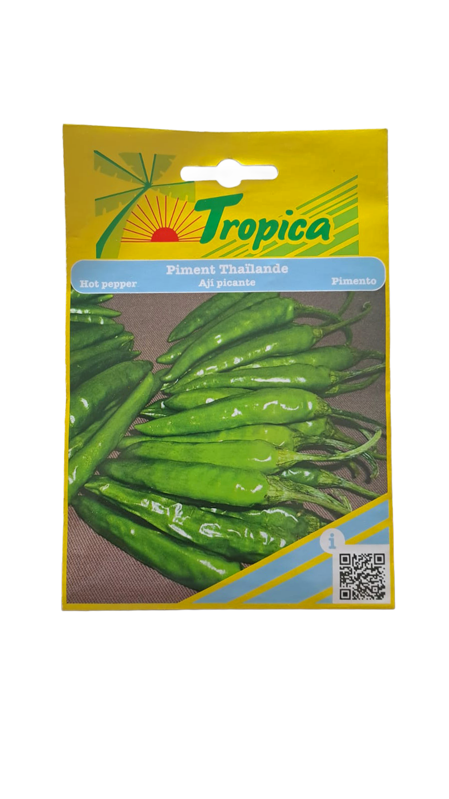

Premium green chili seeds grow vigorous plants loaded with hot, fiery pods bursting with bold flavor. These heat-loving chilies produce abundant bright-green fruits perfect for curries, chutneys, pickles, sauces, or fresh seasoning, thriving in warm, sunny Mauritian gardens with good drainage.
Sow green chili seeds 0.5–1 cm deep in fertile, well-drained soil or trays, spacing 5–10 cm apart in rows 40–60 cm apart. Keep soil warm (25–35°C) and consistently moist for germination in 7–14 days. Transplant seedlings to full sun positions, stake plants if needed, water regularly during flowering and fruiting, and harvest green pods starting at 60–80 days for fresh use or allow to ripen for hotter flavor.
Keep out of reach of children. Store in a cool dry place. Do not ingest.